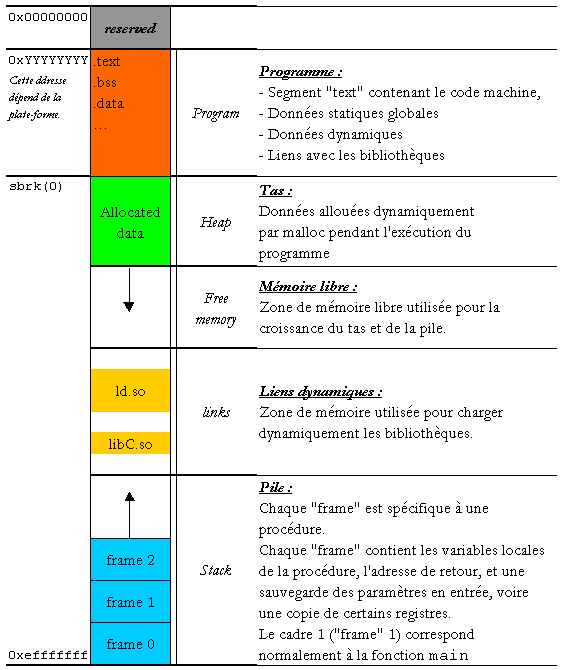
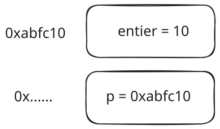
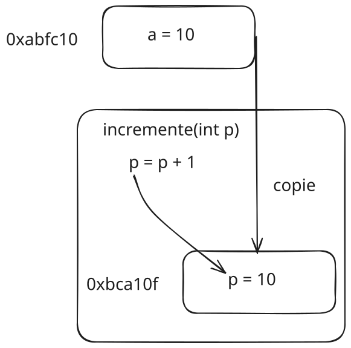
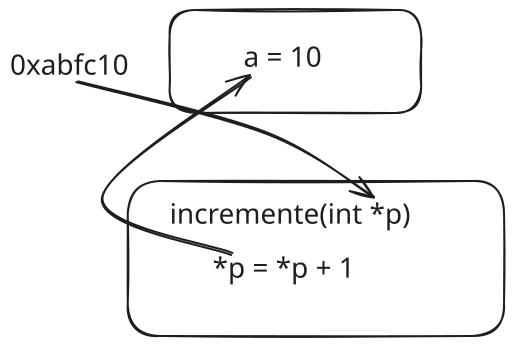

CM3 - Gestion de la mémoire et des pointeurs
Dans ce CM, nous nous intéressons à deux notions primordiales en programmation C vis à vis de la mémoire utilisée par notre programme: les tableaux et les pointeurs. Nous allons essayer de comprendre dans premier temps la notion de stockage dans la mémoire pour un programme C et nous verrons comment intéragir avec des données stockées à l'aide de pointeurs
Table des matières
Agencement de la mémoire
La mémoire dans un ordinateur est une succession d’octets (soit 8 bits), organisés les uns à la suite des autres et directement accessibles par une adresse. Lorsque l'on exécute un programme, une portion de la mémoire vive est allouée pour stocker les variables et les données utilisées par le programme. Cette mémoire est divisée en plusieurs parties comme indiqué dans la figure suivante:

Les deux parties qui nous intéressent sont le Tas (Heap) et la Pile (Stack):
- La pile est un espace mémoire réservé au stockage des variables désallouées automatiquement. Sa taille est à priori limitée. Elle est construite sur un modèle LIFO (Last In First Out): la dernière variable allouée est la première à être désallouée.
- Le tas est un espace mémoire réservé au stockage des variables allouées dynamiquement. Sa taille, du point de vue du programme C, est considérée illimitée. On s'intéressera à cette notion d'allocaiton dynamique dans le CM suivant.
Les autres parties servent à stocker des choses essentielles au fonctionnement du programme (code, données statiques, etc.) mais ne sont pas directement manipulables par le programmeur.
Structures
Une première organisation de données en un ensemble cohérent est la structure. Une structure est un ensemble de variables de types différents qui sont regroupées sous un même nom. Voici un exemple de déclaration d'une structure en C:
struct Person {
char name[50];
int age;
float height;
};Dans cet exemple, nous avons défini une structure Person qui contient trois variables: un tableau de caractères name, un entier age et un flottant height. Pour déclarer une variable de type Person, il suffit d'écrire:
struct Person p;Cela aura pour effet de réserver en mémoire un espace pour les trois variables de la structure Person. Pour accéder aux variables de la structure, il suffit d'utiliser l'opérateur . comme suit
: Dans cette déclaration, les données sont stockées dans la pile car on sait déjà au moment de la compilation combien d'espace mémoire sera nécessaire pour stocker les données.
p.name = "John";
p.age = 20;
p.height = 1.80;
printf("Nom: %s, Age: %d, Taille: %f\n", p.name, p.age, p.height);Les structures sont très utiles pour organiser des données de types différents en un seul ensemble. Elles permettent de définir des types de données personnalisés qui peuvent être utilisés dans le programme.
Il est possible d'omettre le mot-clé struct en utilisant un alias pour la structure. Par exemple:
typedef struct {
char name[50];
int age;
float height;
} Person;Lorsque l'on crée un struct, les éléments sont stockés dans l'ordre dans la mémoire en termes d'adresse. Ainsi une structure telle que:
struct test
{
double height;
char gender;
int age;
};pourrait être stockée de la façon suivante (selon l'architecture de l'ordinateur):
+7 +6 +5 +4 +3 +2 +1 +0
+---+---+---+---+---+---+---+---+
0x0000 | height |
+---+---+---+---+---+---+---+---+
0x0008 | age | |gender|
+---+---+---+---+---+---+---+---+Remarquez ici que gen occupe quand même 4 octets: c'est parce que nous somme sur une architecture 32 bits. Sur une architecture 64 bits, il occuperait 8 octets.
Exercice :Déclarer une structure permettant de représenter un point en dimension 3 et écrire deux fonctions afficher_point3D et distance pour afficher les coordonnées du point et calculer la distance entre deux points respectivement.
Tableaux
Un tableau est une structure de données qui permet de stocker plusieurs éléments de même type sous un même nom. En C, un tableau est déclaré de la façon suivante:
int tab[5];Cela aura pour effet de réserver un espace en mémoire pour 5 entiers. Pour accéder aux éléments du tableau, il suffit d'utiliser l'indice de l'élément:
tab[0] = 10;
tab[1] = 20;
printf("%d\n", tab[0]); // Affiche 10Il est possible d'initialiser un tableau lors de sa déclaration:
int tab[5] = {10, 20, 30, 40, 50};Il est possible de déclarer des tableaux de structures:
struct Person people[5];Pour remplir le tableau, il faut remplir les champs individuellement :
people[0].name = "John";
people[0].age = 20;
people[0].height = 1.80;Les tableaux sont stockés en mémoire de façon contigue. Ainsi, un tableau de 5 entiers sera stocké de la façon suivante:
+4 +3 +2 +1 +0
+---+---+---+---+---+
0x0000 | 10| 20| 30| 40| 50|
+---+---+---+---+---+L'intérêt des tableaux est de pouvoir stocker plusieurs éléments de même type sous un même nom. Cela permet de manipuler facilement des données de même type. Par exemple, une image peut être stockée sous forme de tableau de pixels.
Pointeurs
Définition
La notion de pointeur est essentielle en programmation C, et ne peut être introduite séparément des tableaux tant leur connexion est forte. Un pointeur est une variable qui contient l'adresse mémoire d'une autre variable. En C, un pointeur est déclaré de la façon suivante:
int entier = 50;
int *p = &entier;Dans ce code, p est un pointeur sur un entier. Il contient l'adresse de la variable entier. Pour accéder à la valeur de la variable pointée par p, on utilise l'opérateur *:La situation peut être résumée comme suit:
printf("%d\n", *p); // Affiche 50On se rappelle alors que la syntaxe de la fonction scanf pour lire un entier est:
scanf("%d", &entier);En effet, scanf attend un pointeur sur un entier pour pouvoir modifier la valeur de la variable entier. On évoquera plus bas cette notion de passage de fonction par pointeur.
Pointeurs et tableaux
Les pointeurs et les tableaux sont intimement liés en C. En effet, un tableau est en fait un pointeur sur la première case du tableau. Ainsi, la déclaration:
int tab[5] = {10, 20, 30, 40, 50};Alloue 5 entiers en mémoire de manière contigue et stocke dans la variable tab l'adresse de la première case du tableau. Ainsi, tab est un pointeur sur un entier. Pour accéder aux éléments du tableau, on peut utiliser l'opérateur [] ou l'opérateur *:
printf("%d\n", tab[0]); // Affiche 10
printf("%d\n", *tab); // Affiche 10Il est possible de parcourir un tableau à l'aide de pointeurs:
int *p = tab;
for (int i = 0; i < 5; i++){
printf("%d\n", *(p+i));
}En effet, ajouter un entier à un pointeur revient à décaler le pointeur de la taille d'un entier. Ainsi, p+1 pointe sur le deuxième élément du tableau. Cette opération rentre dans le cadre de ce qu'on appelle l'arithmétique des pointeurs. Si le tableau était d'un type différent, le décalage du pointeur prendrait en compte la taille du type.
Pointeurs et fonctions
Il est possible de passer des pointeurs en argument à une fonction. Cela permet de modifier la valeur d'une variable en dehors de la fonction. Par exemple:Passage par valeur :  
void incrementer(int *p){
*p = *p + 1;
}
int main(){
int a = 10;
incrementer(&a);
}Après l'appel à la fonction incrementer, la valeur de a sera égale à 11. En effet, on a passé l'adresse de a à la fonction incrementer qui a modifié la valeur de aa directement, la valeur de a n'aurait pas été modifiée :
void incrementer(int p){
p = p + 1;
}
int main(){
int a = 10;
incrementer(a);
}Pointeurs void
Il est possible de déclarer un pointeur de type void. Un pointeur de type void est un pointeur qui peut pointer sur n'importe quel type de données. Cela peut être utile lorsqu'on ne connaît pas le type de données que l'on va manipuler. Par exemple:
void *p;
int a = 10;
p = &a;
printf("%d\n", *(int *)p);Dans cet exemple, p est un pointeur de type void qui pointe sur un entier. Pour accéder à la valeur de l'entier, on doit caster le pointeur en pointeur sur un entier: conversion explicite de type.
Tableaux multidimensionnels
Il est possible de déclarer des tableaux de plusieurs dimensions en C. Par exemple, un tableau à deux dimensions peut être déclaré de la façon suivante:
int tab[3][3];Cela aura pour effet de réserver un espace en mémoire pour 9 entiers. Pour accéder aux éléments du tableau, on utilise deux indices:
tab[0][0] = 10;
tab[0][1] = 20;
printf("%d\n", tab[0][0]); // Affiche 10En pratique, le tableau est une zone contigue où l'on stocke ligne par ligne les éléments du tableau. Ainsi, un tableau à deux dimensions (Z lignes, 3 colonnes) est stocké de la façon suivante:
+4 +3 +2 +1 +0
------------+-----------+-----------+-----------+-----------+
0x0000 | tab[1][1] | tab[1][0] | tab[0][2] | tab[0][1] | tab[0][0] |
0x0004 | | tab[1][2] |
------------+-----------+-----------+-----------+-----------+En pratique, tab[0] est un pointeur correspondant à l'entier tab[0][0] (correspondant au tableau 1D de la première ligne) alors que tab[1] correspond à l'entier tab[1][0] (correspondant au tableau 1D de la deuxième ligne).
Le type de tab est alors int ** (pointeur de pointeur d'entier).
Exercice :
Faire une fonction qui remplit un tableau 2D avec les valeurs correspondant au numéro de ligne et colonne: tab[0][0] continent \(0\), tab[1][0] contient \(1\), tab[0][1] contient \(10\), tab[1][1] contient \(11\) etc. La taille du tableau est supposée quelconque. On fera d'abord le prototype de la fonction.